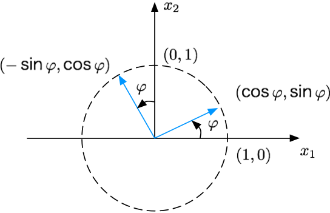

矩阵变换¶
笔记参考自：线性代数拾遗（三）：线性变换以及矩阵的意义
变换¶
对于 \(Ax=b\) 形式的方程：
此形式可以看成是几个列向量的线性组合，即 \(1\begin{bmatrix} 4 \\ 2 \end{bmatrix} + 1\begin{bmatrix} -3 \\ 0 \end{bmatrix} + 1\begin{bmatrix} 1 \\ 5 \end{bmatrix} + 1\begin{bmatrix} 3 \\ 1 \end{bmatrix} = \begin{bmatrix} 5 \\ 8 \end{bmatrix}\)，相当于将 \(A\) 看成一个整体，整个方程就是一个 4 维向量 \(x\) 乘以矩阵 \(A\) 后得到一个 2 维向量 \(b\)。
不难发现，当变换 \(T\) 为 \(x \mapsto Ax\) ，向量 \(x\) 若有 \(n\) 维，则变换的定义域就是 \(R^n\) ， \(A\) 就有 \(n\) 列；向量 \(b\) 若有 \(m\) 维，则变换的上域就是 \(R^m\) ， \(A\) 就有 \(m\) 行（ \(A\) 每一列有 \(m\) 个元素）。而变换的值域就是 \(A\) 中列的所有线性组合组成的集合。
几何中的线性变换¶
通过线性变换的性质，很容易理解图形学中一些专门用于变换的矩阵，比如 2 维平面上的旋转矩阵：
把列向量拆开，就是 \(T(\mathbf{e}_1) = \begin{bmatrix}\cos\varphi \\ \sin\varphi \end{bmatrix}\)， \(T(\mathbf{e}_2) = \begin{bmatrix}-\sin\varphi \\ \cos\varphi \end{bmatrix}\)，也就是 \(\begin{bmatrix}1\\ 0\end{bmatrix}\) 旋转到 \(\begin{bmatrix}\cos\varphi \\ \sin\varphi\end{bmatrix}\) ，\(\begin{bmatrix}0\\ 1\end{bmatrix}\) 旋转到 \(\begin{bmatrix}-\sin\varphi \\ \cos\varphi\end{bmatrix}\) 。
旋转变换如图所示：
